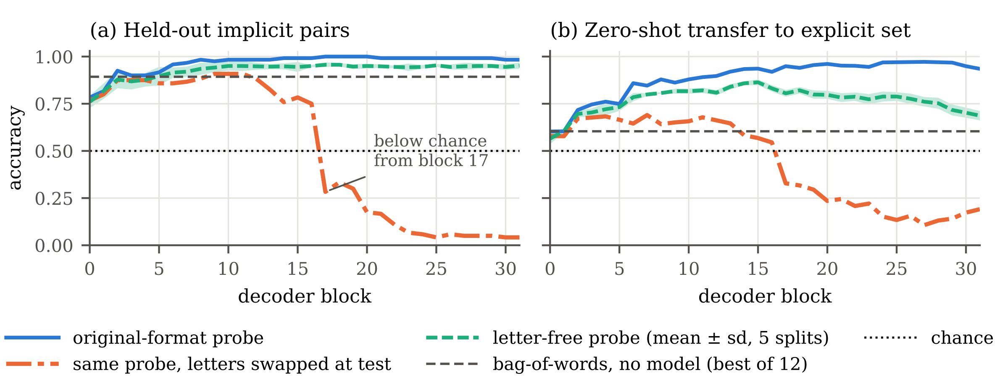
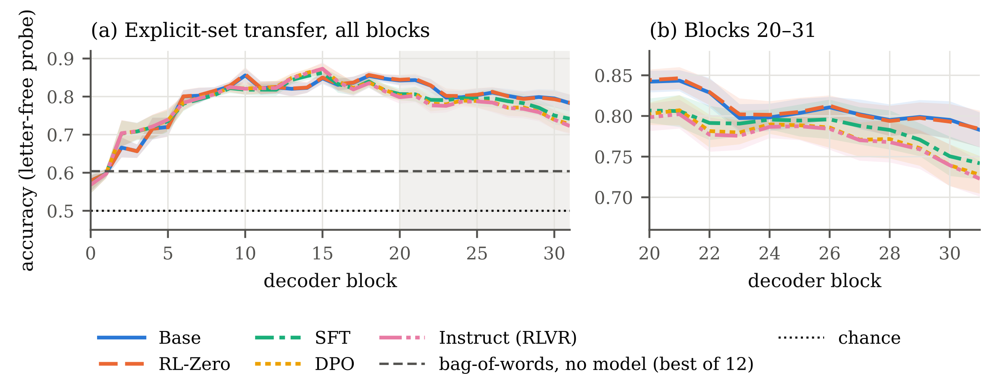
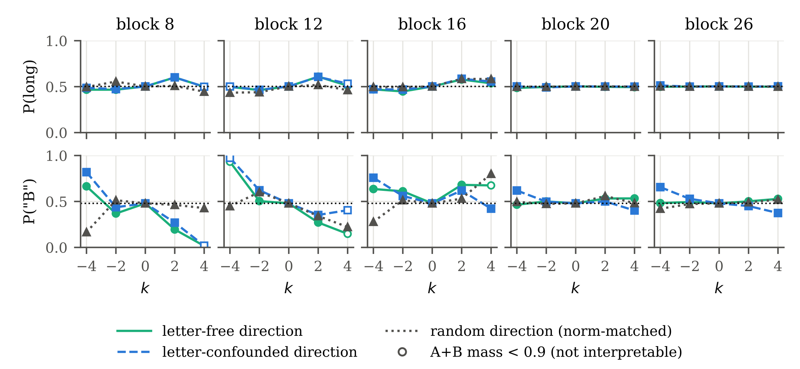

Abstract
Linear probes on a language model’s activations are proposed as oversight tools for decision-relevant distinctions that a model’s final answer may not reveal. A probe’s accuracy, however, is evidence about the intended construct only if nothing else in the data predicts the label. We audit probes for short- versus long-horizon choices, a distinction that bears on many normatively significant trade-offs, across the released training stages of OLMo 3 7B (Base, RL-Zero, SFT, DPO, Instruct) and in Qwen3-4B-Instruct. In the probe dataset we use, every short-horizon option is marked “(A)” and every long-horizon option “(B)”. Probes trained on the original prompts reach 0.97–1.00 held-out accuracy, but swapping the two letters at test time reduces them to 0.03–0.11 in OLMo blocks 26–31, at every stage; a text classifier with no model reproduces the original scores. With the letters removed, a weaker signal survives: it transfers zero-shot to a second, explicit-horizon dataset at 0.85–0.87, against at most 0.60 for bag-of-words baselines. This signal is already present in Base; post-training leaves its peak transfer within 0.02 and lowers its final-block transfer by 0.04–0.06. Activation steering with it does not change forced choices more selectively than norm-matched random directions. We argue that representation-based oversight claims need artifact controls, discrimination from correlated constructs and causal tests, and report which of these our evidence meets.
Decodable Is Not the Same as Valid
A model’s final answer often under-determines the considerations behind it, which makes internal measurements attractive for oversight: a decision-relevant distinction read from activations could be tracked even when the output looks appropriate. Intertemporal trade-offs are a natural target. Many decisions with ethical weight set an immediate benefit against delayed costs, and how a system weighs them is rarely stated. A short horizon is not, by itself, the worse choice, so the construct of interest is not “moral correctness” but whether and how a model represents the horizon of its options.
High probe accuracy shows that a label is linearly decodable, not that the model encodes the intended construct, and still less that it uses it. If some incidental property of the inputs predicts the label, a probe can learn that property instead. We study this in a concrete case: a recent study localised a temporal-preference signal in Qwen3-4B-Instruct with probes, attribution and patching, and we set out to ask at which OLMo 3 training stage such a signal forms. The probe accuracies were near-perfect and transferred almost perfectly to a second dataset. Both facts turned out to have a simple cause.
The original probe fails letter counterbalancing. A probe trained without letters passes by construction.
◐ Letter-free probe only0.85–0.87 zero-shot transfer, beating every bag-of-words baseline, but to a set from the same study.
◐ PartlyHorizon co-varies with the scope and abstractness of the action; the two are not yet separated.
? Not testedSteering along the signal moves forced choices no more selectively than random directions.
✗ Not shownSetup and Controls
We use the two publicly released sets from that study. The implicit set has 300 pairs: a stem and two continuations, one immediate and one long-term, with almost no temporal vocabulary (“When the system fails, the first priority becomes (A) containing the spreading damage before it escalates” versus “… (B) redesigning the architecture to prevent recurrence”). The explicit set has 500 pairs with stated horizons (“(A) What we can deliver in the next 30 days” versus “(B) What position we want in 10 years”). Each continuation is a separate prompt, labelled 1 if long-term.
We read the residual stream at the output of every block at the last token of the option, across the five OLMo 3 7B checkpoints (Base, RL-Zero, SFT, DPO, Instruct) and Qwen3-4B-Instruct as a cross-model check. The probe is an \(\ell_2\)-regularised logistic regression on standardised features, \[ \min_{w,b}\; C\sum_i \ell_{\mathrm{BCE}}\big(w^\top z_i + b,\; y_i\big) + \tfrac12\lVert w\rVert^2, \qquad C = 0.1, \] fitted on five 80/20 splits grouped by pair. Implicit accuracy is measured on held-out pairs; explicit transfer applies the implicit-trained probe, unchanged, to all 1,000 explicit prompts.
Three controls do most of the work:
- Letter swap. “(A)” and “(B)” are exchanged in each prompt with the content unchanged, and the original-format probe is evaluated on the result.
- Letter removal. The markers are deleted, and a letter-free probe is trained and evaluated without them.
- Lexical baselines. Bag-of-words logistic regressions with no model, 12 settings, reporting the best one chosen on the evaluation data, which favours the baseline.
A Near-Perfect Probe Reads the Letter
Trained on the released prompts, the probe for the Instruct model reaches 0.97–1.00 on held-out implicit pairs from block 7 on and transfers at 0.97 to the explicit set. Because the two sets share little vocabulary (Jaccard similarity 0.21), that transfer would ordinarily count against a lexical explanation. But in both sets the option letter determines the label in every prompt: 300/0 and 0/300 in the implicit set, 500/0 and 0/500 in the explicit set.

Swapping the letters leaves early blocks close to their original accuracy, drops the probe below chance from block 17, and leaves it at 0.04–0.06 on implicit pairs in blocks 26–31. Far-below-chance accuracy means the probe’s decision follows the letter, not that the activations contain nothing else: the same layers support a good letter-free probe.
The pattern holds at every stage and in both formats: under the swap, the original-format probe scores 0.03–0.11 in blocks 26–31 for Base, RL-Zero, SFT, DPO and Instruct. It is a property of the dataset and needs no model at all. A bag-of-words classifier that keeps the letter tokens scores 1.00 on implicit pairs and 0.99 on the explicit set. Qwen3-4B-Instruct shows the same failure with a different depth profile: at layer 26, where the original study’s probe peaked, our original-format probe scores 0.99, but 0.29 with letters swapped. Unlike in OLMo, a letter-free probe there remains strong (0.95 implicit, 0.87 explicit), so in Qwen the confound inflates the late-layer probe rather than accounting for all of it.
What Survives Without the Letters
With the letters removed, the probe separates held-out implicit pairs at 0.95–0.97, only modestly above the best bag-of-words baseline (0.89). Transfer is more informative: lexical baselines trained on implicit items reach at most 0.60 on the explicit set, while the letter-free probe transfers at 0.85–0.87 at its best block in every OLMo checkpoint. It captures something shared across the two sets that word identity does not.
| Checkpoint, format | Implicit | Explicit | Best block | Explicit, block 31 | Original, swapped |
|---|---|---|---|---|---|
| OLMo 3 Base, plain | 0.97 | 0.86 | 10 | 0.78 | 0.05 |
| OLMo 3 RL-Zero, plain | 0.97 | 0.86 | 10 | 0.78 | 0.04 |
| OLMo 3 SFT, plain | 0.96 | 0.86 | 15 | 0.74 | 0.11 |
| OLMo 3 DPO, plain | 0.96 | 0.87 | 15 | 0.73 | 0.11 |
| OLMo 3 Instruct, plain | 0.97 | 0.87 | 15 | 0.72 | 0.08 |
| OLMo 3 SFT, chat | 0.96 | 0.85 | 15 | 0.71 | 0.08 |
| OLMo 3 DPO, chat | 0.96 | 0.86 | 15 | 0.69 | 0.07 |
| OLMo 3 Instruct, chat | 0.96 | 0.86 | 15 | 0.69 | 0.06 |
| Qwen3-4B Instruct, chat | 0.97 | 0.89 | 21 | 0.82 | 0.29 |
What that shared property is, is less clear. The implicit set contrasts courses of action and almost never states a horizon (1% of prompts contain a time expression, versus 42% of short and 66% of long options in the explicit set). A direction that separates the implicit options could encode time horizon, but equally the scope, abstractness or ambition of the action, all of which co-vary with horizon in both sets. We therefore call the signal horizon-correlated: robust to the letter artifact and to lexical overlap, not yet discriminated from correlated constructs.
Post-training changes late-layer readout more than peak transfer

All OLMo checkpoints peak at 0.85–0.87, within 0.02 of one another, and their curves overlap up to block 20. The final blocks differ: compared with Base on the same split, block-31 transfer is lower for SFT by 0.041 on average (lower in all five splits), with smaller further decreases for DPO and Instruct. RL-Zero and Base differ by at most 0.007 at any block. The checkpoints are observational snapshots, so we can locate the change but not attribute it to a mechanism. Within these limits, the signal is present before post-training, which mainly lowers its linear readability in the last blocks.
Steering Does Not Establish Control
We add \(k\,d\) to every position at the output of block \(L \in \{8, 12, 16, 20, 26\}\) of the Instruct model while it answers an explicit-set pair as a forced choice (“Answer with just the letter A or B”), asked with both letter orders. Here \(d\) is the class-mean difference of letter-free activations on the implicit set, \[ d = \mathbb{E}\big[h_L(x) \mid \text{long}\big] - \mathbb{E}\big[h_L(x) \mid \text{short}\big], \] and a letter-confounded direction and a Gaussian random direction are rescaled to \(\lVert d\rVert\), so \(k\) is in units of class separation.

Unsteered, the model chooses the long-horizon option with mean probability 0.50. The largest increase is 0.10 (\(k = +2\), blocks 8 and 12), and the letter-confounded direction produces the same increase; at block 16 the random direction moves the choice as much as the letter-free one (0.58 for both); at blocks 20 and 26 no direction moves it by more than 0.02. What changes more is the letter: P(“B”) ranges from 0.17 to 0.82, and the random direction moves it as much as the others.
We read this as no evidence of selective control under this readout, not as evidence that the representation is unused: the counterbalanced forced choice averages to exactly indifference, and may not elicit this model’s preference at all.
What a Probe Audit Can Claim
A probe result can back claims at six levels. Each one rests on the levels before it, so a probe that fails one supports nothing after it.
| Level | Question | This study |
|---|---|---|
| 1. Predictive validity | Does the probe predict the label on held-out items? | Yes (0.97–1.00), but satisfied by the letter alone. |
| 2. Artifact robustness | Does it survive counterbalancing of irrelevant format features? | Original probe: no. Letter-free probe: yes, by construction. |
| 3. Construct discrimination | Does it separate the construct from plausible correlates? | Not tested; horizon co-varies with action scope and abstractness. |
| 4. Generalisation | Does it transfer across datasets and contexts? | Partly: 0.85–0.87 to a second set from the same study. |
| 5. Causal relevance | Does intervening on it change behaviour selectively? | Not shown under the A/B readout. |
| 6. Oversight utility | Does it predict decision-relevant failures better than simpler monitors? | Not tested. |
Limitations
Horizon is confounded with action scope and abstractness; a design that crosses horizon with scope at matched stems and counterbalanced order would test it. Both datasets share one study and template. The stage analysis rests on one model family, and released snapshots cannot isolate a training mechanism. The A/B readout averages to indifference; free-text continuations scored for horizon, per-prompt paired tests against random directions, and concept erasure would allow a real causal test. We use one token position and one linear probe.
A strong internal score was, in this case, evidence for the wrong construct. The signal that survives is real, robust to the artifact and present from pretraining on, but not yet shown to be about time or to drive choices.
This work was carried out as part of the Supervised Program for Alignment Research (SPAR).
BibTeX
@misc{tiku2026reading,
title = {Reading the Letter, Not the Horizon: A Construct-Validity Audit of Temporal-Preference Probes},
author = {Tiku, Sarvesh},
note = {Under consideration at the MERe AI 2026 Workshop},
year = {2026}
}